zensols.config package#
Submodules#
zensols.config.condyaml#
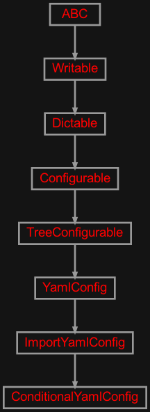
Conditional branching logic configuration.
- class zensols.config.condyaml.ConditionalYamlConfig(*args, **kwargs)[source]#
Bases:
ImportYamlConfigConditionally includes configuration based on very basic if/then logic. YAML nodes (defaulting to name
condition) are replaced with a single node either under athennode or anelsenode.For the
thennode to be used, theifvalue must evaluate to something that evaluates to true in Python. For this reason, it is recommended to use boolean constants oreval:syntax.- For example::
- condition:
if: ${default:testvar} then:
- classify_net_settings:
embedding_layer: ‘glove_50_embedding_layer’ recurrent_settings: ‘recurrent_settings’
- else:
- classify_net_settings:
embedding_layer: ‘transformer_embedding_layer’ recurrent_settings: ‘recurrent_settings’
- __init__(*args, **kwargs)[source]#
Initialize with importation configuration. The usage of
default_varsin the super class is disabled since this implementation uses a mix of dot and colon (configparser) variable substitution (the later used when imported from anImportIniConfig.- Parameters:
config_file – the configuration file path to read from; if the type is an instance of
io.TextIOBase, then read it as a file objectdefault_section – used as the default section when non given on the get methds such as
get_option(); which defaults todefualtsections_name – the dot notated path to the variable that has a list of sections
sections – used as the set of sections for this instance
import_name – the dot notated path to the variable that has the import entries (see class docs); defaults to
importparse_values – whether to invoke the
Serializerto create in memory Python data, which defaults to false to keep data as string for configuraiton merging
zensols.config.configbase#
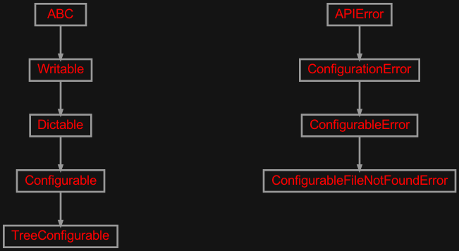
Abstract base class for a configuration read from a file.
- class zensols.config.configbase.Configurable(default_section=None)[source]#
Bases:
DictableAn abstract base class that represents an application specific configuration.
Note that many of the getters are implemented in
configparser. However, they are reimplemented here for consistency among parser.- __init__(default_section=None)[source]#
Initialize.
- Parameters:
default_section (
str) – used as the default section when non given on the get methds such asget_option(); which defaults todefualt
- as_deep_dict()[source]#
Return a deep
builtins.dictwith the top level with section names as keys and deep (i.e.json:) values as nested dictionaries.
- as_one_tier_dict(*args, **kwargs)[source]#
Return a flat one-tier
builtins.dictwith keys in<section>:<option>format.
- asdict(*args, **kwargs)[source]#
Return the content of the object as a dictionary.
- Parameters:
recurse – if
True, recursively create dictionary so some values might be dictionaries themselvesreadable – use human readable and attribute keys when available
class_name_param – if set, add a
class_name_paramkey with the class’s fully qualified name (includes module name)
- Return type:
- Returns:
a JSON’able tree of dictionaries with primitive data
- See:
asjson()- See:
_from_dictable()
- copy_sections(to_populate, sections=None, robust=False)[source]#
Copy all sections from this configuruable to
to_populate.- Parameters:
to_populate (
Configurable) – the target configuration objectsections (
Iterable[str]) – the sections to populate orNoneto copy allowrobust (
bool) – ifTrue, when any exception occurs (namely interplation exceptions), don’t copy and remove the section in the target configuraiton
- Return type:
- Returns:
the last exception that occured while trying to copy the properties
- get_option_boolean(name, section=None)[source]#
Just like
get_option()but parse as a boolean (any case true).
- get_option_float(name, section=None)[source]#
Just like
get_option()but parse as a float.
- get_option_int(name, section=None)[source]#
Just like
get_option()but parse as an integer.- Parameters:
section (
str) – section in the ini file to fetch the value; defaults to constructor’sdefault_section
- get_option_list(name, section=None)[source]#
Just like
get_option()but parse as a list usingsplit.
- get_option_object(name, section=None)[source]#
Just like
get_option()but parse as an object per object syntax rules.
- get_option_path(name, section=None)[source]#
Just like
get_option()but return apathlib.Pathobject of the string.
- abstract get_options(section=None)[source]#
Get all options for a section. If
opt_keysis given return only options with those keys.
- merge(to_populate)[source]#
Copy all data from this configuruable to
to_populate, and clobber any overlapping properties in the process.- Parameters:
to_populate (
Configurable) – the target configuration object
- populate(obj=None, section=None, parse_types=True)[source]#
Set attributes in
objwithsetattrfrom the all values insection.
- resource_filename(resource_name, module_name=None)[source]#
Return a resource based on a file name. This uses the
pkg_resourcespackage first to find the resources. If it doesn’t find it, it returns a path on the file system.- Param:
resource_name the file name of the resource to obtain (or name if obtained from an installed module)
- Parameters:
module_name (
str) – the name of the module to obtain the data, which defaults to__name__- Returns:
a path on the file system or resource of the installed module
- set_option(name, value, section=None)[source]#
Set an option on this configurable.
- Parameters:
- Raises:
NotImplementedError – if this class does not support this operation
- write(depth=0, writer=<_io.TextIOWrapper name='<stdout>' mode='w' encoding='utf-8'>)[source]#
Write this instance as either a
Writableor as aDictable. If class attribute_DICTABLE_WRITABLE_DESCENDANTSis set asTrue, then use thewrite()method on children instead of writing the generated dictionary. Otherwise, write this instance by first creating adictrecursively usingasdict(), then formatting the output.If the attribute
_DICTABLE_WRITE_EXCLUDESis set, those attributes are removed from what is written in thewrite()method.Note that this attribute will need to be set in all descendants in the instance hierarchy since writing the object instance graph is done recursively.
- Parameters:
depth (
int) – the starting indentation depthwriter (
TextIOBase) – the writer to dump the content of this writable
- exception zensols.config.configbase.ConfigurableError[source]#
Bases:
ConfigurationErrorBase class raised for any configuration based errors.
- __annotations__ = {}#
- __module__ = 'zensols.config.configbase'#
- exception zensols.config.configbase.ConfigurableFileNotFoundError(path, source=None)[source]#
Bases:
ConfigurableErrorRaised when a configuration file is not found for those file based instances of
Configurable.- __annotations__ = {}#
- __module__ = 'zensols.config.configbase'#
- class zensols.config.configbase.TreeConfigurable(default_section=None, default_vars=None, sections_name='sections', sections=None)[source]#
Bases:
ConfigurableA hierarchical configuration. The sections are the root nodes, but each section’s values can be nested
dictinstances. These values are traversable with a string dot path notation.- __init__(default_section=None, default_vars=None, sections_name='sections', sections=None)[source]#
Initialize.
- Parameters:
default_section (
str) – used as the default section when non given on the get methds such asget_option(); which defaults todefualtdefault_vars (
Dict[str,Any]) – used in place of missing variables duing value interpolation; deprecated: this will go away in a future releasesections_name (
str) – the dot notated path to the variable that has a list of sectionssections (
Set[str]) – used as the set of sections for this instance
- asdict(*args, **kwargs)[source]#
Return the content of the object as a dictionary.
- Parameters:
recurse – if
True, recursively create dictionary so some values might be dictionaries themselvesreadable – use human readable and attribute keys when available
class_name_param – if set, add a
class_name_paramkey with the class’s fully qualified name (includes module name)
- Return type:
- Returns:
a JSON’able tree of dictionaries with primitive data
- See:
asjson()- See:
_from_dictable()
- get_options(name=None)[source]#
Get all options for a section. If
opt_keysis given return only options with those keys.
- get_tree(name=None)[source]#
Get the node in the configuration, which is a nested set
dictinstances as an object graph.
- invalidate()[source]#
This should be called when the underlying
configobject graph changes under the nose of this instance.
- property root: str | None#
The root name of the configuration file, if one exists. If more than one root exists, return the first.
- write(depth=0, writer=<_io.TextIOWrapper name='<stdout>' mode='w' encoding='utf-8'>)[source]#
Write this instance as either a
Writableor as aDictable. If class attribute_DICTABLE_WRITABLE_DESCENDANTSis set asTrue, then use thewrite()method on children instead of writing the generated dictionary. Otherwise, write this instance by first creating adictrecursively usingasdict(), then formatting the output.If the attribute
_DICTABLE_WRITE_EXCLUDESis set, those attributes are removed from what is written in thewrite()method.Note that this attribute will need to be set in all descendants in the instance hierarchy since writing the object instance graph is done recursively.
- Parameters:
depth (
int) – the starting indentation depthwriter (
TextIOBase) – the writer to dump the content of this writable
zensols.config.configfac#
Creates instances of Configurable.
- class zensols.config.configfac.ConfigurableFactory(kwargs=<factory>, type_map=<factory>)[source]#
Bases:
objectCreate instances of
Configurablewith factory methods. The parameters inkwargsgiven to the initalizer on instantiation.This class often is used to create a factory from just a path, which then uses the extension with the
EXTENSION_TO_TYPEmapping to select the class. Top level/entry point configuration should useconfas the extension allowing theImportInito import other configuration. An example of this is theConfigurationImporterloading user specific configuration.If the class uses
type = import, the type is prepended withimportand then mapped usingEXTENSION_TO_TYPE. This allows mixing of different files in oneconfig_filesentry and avoids multiple import sections.- See:
.ImportIniConfig
-
EXTENSION_TO_TYPE:
ClassVar[Dict[str,str]] = {'conf': 'ini', 'ini': 'ini', 'json': 'json', 'yml': 'yaml'}# The configuration factory extension to clas name.
-
TYPE_TO_CLASS_PREFIX:
ClassVar[Dict[str,str]] = {'condyaml': 'ConditionalYaml', 'import': 'ImportIni', 'importini': 'ImportIni', 'importyaml': 'ImportYaml'}# Mapping from
TYPE_NAMEoption to class prefix.
- __init__(kwargs=<factory>, type_map=<factory>)#
- from_class_name(class_name)[source]#
Create a configurable from the class name given.
- from_path(path)[source]#
Create a configurable from a path. This updates the
kwargsto setconfig_fileto the given path for the duration of this method.- Return type:
- from_type(config_type)[source]#
Create a configurable from the configuration type.
- Parameters:
config_type (
str) – one of the values inEXTENSION_TO_TYPE(i.e. importini)- Return type:
- Returns:
a new instance of a configurable identified by
class_nameand created withkwargs
zensols.config.dictable#
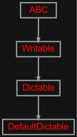
Contains a class used to create a tree of dictionaries with only Python primitives handy for creating JSON.
- class zensols.config.dictable.DefaultDictable(data)[source]#
Bases:
DictableA convenience utility class that provides access to methods such as
write()andasjson()without needing inheritance.- __init__(data)#
- class zensols.config.dictable.Dictable[source]#
Bases:
WritableA class that that generates a dictionary recursively from data classes and primitive data structures.
To override the default behavior of creating a dict from a
dataclass, override the_from_dictable()method.In addition to the fields from the dataclass, if the attribute
_DICTABLE_ATTRIBUTESis set, those are added as well (see_get_dictable_attributes()).See
write()for how a dictable writes itself as a sublcass ofWritableand usage of class attributes_DICTABLE_WRITABLE_DESCENDANTSand_DICTABLE_WRITE_EXCLUDES.- _from_dictable(recurse, readable, class_name_param=None)[source]#
A subclass can override this method to give create a custom specific dictionary to be returned from the
asjson()client access method.- Parameters:
- Return type:
- Returns:
a JSON’able tree of dictionaries with primitive data
- See:
- See:
- _write_descendants(depth=0, writer=<_io.TextIOWrapper name='<stdout>' mode='w' encoding='utf-8'>)[source]#
Write this instance by using the
write()method on children instead of writing the generated dictionary.
- See:
- __init__()#
- asdict(recurse=True, readable=True, class_name_param=None)[source]#
Return the content of the object as a dictionary.
- Parameters:
- Return type:
- Returns:
a JSON’able tree of dictionaries with primitive data
- See:
- See:
- asflatdict(*args, **kwargs)[source]#
Like
asdict()but flatten in to a data structure suitable for writing to JSON or YAML.
- asjson(writer=None, recurse=True, readable=True, **kwargs)[source]#
Return a JSON string representing the data in this instance.
- Return type:
- asyaml(writer=None, recurse=True, readable=True, **kwargs)[source]#
Return a YAML string representing the data in this instance.
- Return type:
- write(depth=0, writer=<_io.TextIOWrapper name='<stdout>' mode='w' encoding='utf-8'>)[source]#
Write this instance as either a
Writableor as aDictable. If class attribute_DICTABLE_WRITABLE_DESCENDANTSis set asTrue, then use thewrite()method on children instead of writing the generated dictionary. Otherwise, write this instance by first creating adictrecursively usingasdict(), then formatting the output.If the attribute
_DICTABLE_WRITE_EXCLUDESis set, those attributes are removed from what is written in thewrite()method.Note that this attribute will need to be set in all descendants in the instance hierarchy since writing the object instance graph is done recursively.
- Parameters:
depth (
int) – the starting indentation depthwriter (
TextIOBase) – the writer to dump the content of this writable
zensols.config.dictconfig#
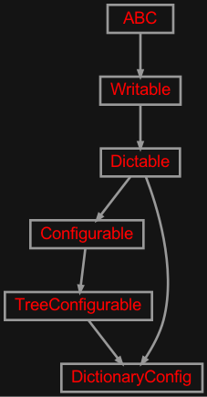
Implementation of a dictionary backing configuration.
- class zensols.config.dictconfig.DictionaryConfig(config=None, default_section=None, deep=False)[source]#
Bases:
TreeConfigurable,DictableThis is a simple implementation of a dictionary backing configuration. The provided configuration is just a two level dictionary. The top level keys are the section and the values are a single depth dictionary with string keys and values.
You can override
_get_config()to restructure the dictionary for application specific use cases. One such example isJsonConfig._get_config().- classmethod from_config(source, **kwargs)[source]#
Create an instance from another configurable.
- Parameters:
source (
Configurable) – contains the source data from which to copykwargs (
Dict[str,Any]) – initializer arguments for the new instance
- Return type:
- Returns:
a new instance of this class with the data copied from
source
- get_options(section=None)[source]#
Get all options for a section. If
opt_keysis given return only options with those keys.
zensols.config.diff#
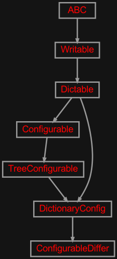
A class to diff configurations.
Using this module requires the deepdiff package:
pip install deepdiff
- class zensols.config.diff.ConfigurableDiffer(config_a, config_b, change_format='{} -> {}')[source]#
Bases:
DictionaryConfigA class to diff configurations. Each section of configuration contains properties of the changed options.
zensols.config.envconfig#
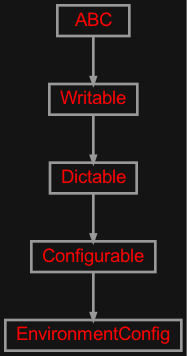
An implementation configuration class that holds environment variables.
- class zensols.config.envconfig.EnvironmentConfig(section_name='env', map_delimiter=None, skip_delimiter=False, includes=None)[source]#
Bases:
ConfigurableAn implementation configuration class that holds environment variables.
This config will need to be added to children to
ImportIniConfigif used in the configuration or import sections.- __init__(section_name='env', map_delimiter=None, skip_delimiter=False, includes=None)[source]#
Initialize with a string given as described in the class docs.
The string
<DOLLAR>used withmap_delimiteris the same as$since adding the dollar in some configuration scenarios has parsing issues. One example is when$$failes on copying section to anIniConfig.- Parameters:
section_name (
str) – the name of the created section with the environment variablesmap_delimiter (
str) – when given, all environment values are replaced with a duplicate; set this to$when usingconfigparser.ExtendedInterpolationfor environment variables such asPS1skip_delimiter (
bool) – a string, when present, causes the environment variable to be skipped; this is useful for environment variables that cause interpolation errorsincludes (
Set[str]) – if given, the set of environment variables to set excluding the rest; include all ifNone
zensols.config.facbase#
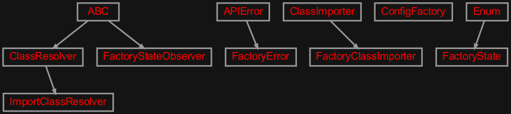
Classes that create new instances of classes from application configuration objects and files.
- class zensols.config.facbase.ConfigFactory(config, pattern='{name}', default_name='default', class_resolver=None)[source]#
Bases:
objectCreates new instances of classes and configures them given data in a configuration
Configurableinstance.- CLASS_NAME = 'class_name'#
The class name attribute in the section that identifies the fully qualified instance to create.
- CONFIG_ATTRIBUTE = 'config'#
The configuration of the parameter given to
__init__. If a parameter of this name is on the instance being created it will be set as the instance of the configuration given to the initializer of this factory instance.
- CONFIG_FACTORY_ATTRIBUTE = 'config_factory'#
The configuration factory of the parameter given to
__init__. If a parameter of this name is on the instance being created it will be set as the instance of this configuration factory.
- NAME_ATTRIBUTE = 'name'#
The name of the parameter given to
__init__. If a parameter of this name is on the instance being created it will be set from the name of the section.
- __init__(config, pattern='{name}', default_name='default', class_resolver=None)[source]#
Initialize a new factory instance.
- Parameters:
config (
Configurable) – the configuration used to create the instance; all data from the corresponding section is given to the__init__methodpattern (
str) – section pattern used to find the values given to the__init__methodconfig_param_name – the
__init__parameter name used for the configuration object given to the factory’sinstancemethod; defaults toconfigconfig_param_name – the
__init__parameter name used for the instance name given to the factory’sinstancemethod; defaults toname
- clone()[source]#
Return a copy of this configuration factory that functionally works the same.
- Return type:
- from_config_string(v)[source]#
Create an instance from a string used as option values in the configuration.
- Return type:
- get_class(name)[source]#
Return a class by name.
- Parameters:
name (
str) – the name of the class (by default) or the key name of the class used to find the class; this is the section name for theImportConfigFactory- Return type:
- instance(name=None, *args, **kwargs)[source]#
Create a new instance using key
name.- Parameters:
name (
Optional[str]) – the name of the class (by default) or the key name of the class used to find the class; this is the section name for theImportConfigFactoryargs – given to the
__init__methodkwargs – given to the
__init__method
- classmethod register(instance_class, name=None)[source]#
Register a class with the factory. This method assumes the factory instance was created with a (default)
DictionaryClassResolver.
- class zensols.config.facbase.FactoryClassImporter(class_name, reload=True)[source]#
Bases:
ClassImporterJust like the super class, but if instances of type
FactoryStateObserverare notified with aFactoryState.CREATED.
- exception zensols.config.facbase.FactoryError(msg, factory=None)[source]#
Bases:
APIErrorRaised when an object can not be instantianted by a
ConfigFactory.- __annotations__ = {}#
- __module__ = 'zensols.config.facbase'#
- class zensols.config.facbase.FactoryState(value, names=None, *, module=None, qualname=None, type=None, start=1, boundary=None)[source]#
Bases:
EnumThe state updated from an instance of
ConfigFactory. Currently the only state is that an object has finished being created.Future states might inlude when a
ImportConfigFactoryhas created all objects from a configuration shared session.- CREATED = 1#
- class zensols.config.facbase.FactoryStateObserver[source]#
Bases:
ABCAn interface that recieves notifications that the factory has created this instance. This is useful for classes such as
Writeback.- See:
- class zensols.config.facbase.ImportClassResolver(reload=False)[source]#
Bases:
ClassResolverResolve a class name from a list of registered class names without the module part. This is used with the
registermethod onConfigFactory.
zensols.config.importfac#
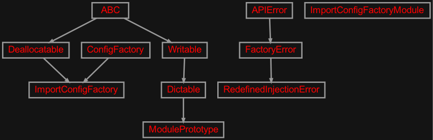
A configuration factory that (re)imports based on class name.
- class zensols.config.importfac.ImportConfigFactory(*args, reload=False, shared=True, reload_pattern=None, **kwargs)[source]#
Bases:
ConfigFactory,DeallocatableImport a class by the fully qualified class name (includes the module).
This is a convenience class for setting the parent class
class_resolverparameter.- __init__(*args, reload=False, shared=True, reload_pattern=None, **kwargs)[source]#
Initialize the configuration factory.
- Parameters:
reload (
Optional[bool]) – whether or not to reload the module when resolving the class, which is useful for debugging in a REPLshared (
Optional[bool]) – whenTrueinstances are shared and only created once across sections for the life of thisImportConfigFactoryinstancereload_pattern (
Union[Pattern,str,None]) – if set, reload classes that have a fully qualified name that match the regular expression regarless of the settingreloadkwargs – the key word arguments given to the super class
- clear_instance(name)[source]#
Remove a shared (cached) object instance.
- Parameters:
name (
str) – the section name of the instance to evict and the same string used to create withinstance()ornew_instance()- Return type:
- Returns:
the instance that was removed (if present), otherwise
None
- clone()[source]#
Return a copy of this configuration factory that functionally works the same. However, it does not copy over any resources generated during the life of the factory.
- Return type:
- from_config_string(v)[source]#
Create an instance from a string used as option values in the configuration.
- Return type:
- instance(name=None, *args, **kwargs)[source]#
Create a new instance using key
name.- Parameters:
name (
Optional[str]) – the name of the class (by default) or the key name of the class used to find the class; this is the section name for theImportConfigFactoryargs – given to the
__init__methodkwargs – given to the
__init__method
- new_deep_instance(name=None, *args, **kwargs)[source]#
Like
new_instance()but copy all recursive instances as new objects as well.
- new_instance(name=None, *args, **kwargs)[source]#
Create a new instance without it being shared. This is done by evicting the existing instance from the shared cache when it is created next time the contained instances are shared.
- Parameters:
name (
str) – the name of the class (by default) or the key name of the class used to find the classargs – given to the
__init__methodkwargs – given to the
__init__method
- See:
- See:
- class zensols.config.importfac.ImportConfigFactoryModule(factory)[source]#
Bases:
objectA module used by
ImportConfigFactoryto create instances using special formatted string (i.e.instance:). Subclasses implement the object creation based on the formatting of the string.- __init__(factory)#
-
factory:
ImportConfigFactory# The parent/owning configuration factory instance.
- post_populate(inst)[source]#
Called to populate or replace the created instance after being generated by
ImportConfigFactory.- Return type:
- class zensols.config.importfac.ModulePrototype(factory, name, config_str)[source]#
Bases:
DictableContains the prototype information necessary to create an object instance using :class:`.ImportConfigFactoryModule.
- __init__(factory, name, config_str)#
-
factory:
ImportConfigFactory# The factory that created this prototype.
- exception zensols.config.importfac.RedefinedInjectionError(msg, factory=None)[source]#
Bases:
FactoryErrorRaised when any attempt to redefine or reuse injections for a class.
- __annotations__ = {}#
- __module__ = 'zensols.config.importfac'#
zensols.config.importini#
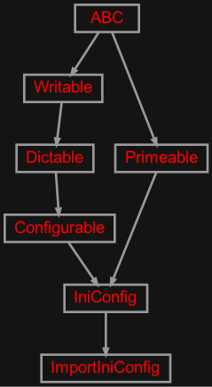
Contains a class for importing child configurations.
- class zensols.config.importini.ImportIniConfig(*args, config_section='import', exclude_config_sections=True, children=(), use_interpolation=True, **kwargs)[source]#
Bases:
IniConfigA configuration that uses other
Configurableclasses to load other sections. A specialimportsection is given that indicates what other sections to load as children configuration. Each of those indicated to import are processed in order by:Creating the delegate child
Configurablegiven in the section.Copying all sections from child instance to the parent.
Variable interpolation as a function of
ConfigParserusingExtendedInterpolation.
The
importsection has asectionsentry as list of sections to load, areferencesentry indicating which sections to provide as children sections in child loaders, aconfig_fileand ``config_files` entries to load as children directly.For example:
[import] references = list: default, package, env sections = list: imp_obj [imp_obj] type = importini config_file = resource: resources/obj.conf
This configuration loads a resource import INI, which is an implementation of this class, and provides sections
default,packageandenvfor any property string interpolation while loadingobj.conf.See the API documentation for more information.
- CLEANUPS_NAME = 'cleanups'#
- CONFIG_FILES = 'config_files'#
- IMPORT_SECTION = 'import'#
- REFS_NAME = 'references'#
- SECTIONS_SECTION = 'sections'#
- SINGLE_CONFIG_FILE = 'config_file'#
- TYPE_NAME = 'type'#
- __init__(*args, config_section='import', exclude_config_sections=True, children=(), use_interpolation=True, **kwargs)[source]#
Initialize.
- Parameters:
config_file – the configuration file path to read from
default_section – default section (defaults to default)
robust – if True, then don’t raise an error when the configuration file is missing
config_section (
str) – the name of the section that has the configuration (i.e. thesectionsentry)exclude_config_sections (
bool) – ifTrue, the import and other configuration sections are removedchildren (
Tuple[Configurable,...]) – additional configurations used both before and after bootstrappinguse_interpolation (
bool) – ifTrue, interpolate variables usingExtendedInterpolation
zensols.config.importyaml#
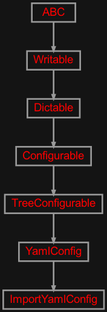
YAML configuration importation like ImportIniConfig.
- class zensols.config.importyaml.ImportYamlConfig(config_file=None, default_section=None, sections_name='sections', sections=None, import_name='import', parse_values=False, children=())[source]#
Bases:
YamlConfigLike
YamlConfigbut supports configuration importation likeImportIniConfig. The list of imports is given atimport_name(see initializer), and contains the same information as import sections documented inImportIniConfig.- __init__(config_file=None, default_section=None, sections_name='sections', sections=None, import_name='import', parse_values=False, children=())[source]#
Initialize with importation configuration. The usage of
default_varsin the super class is disabled since this implementation uses a mix of dot and colon (configparser) variable substitution (the later used when imported from anImportIniConfig.- Parameters:
config_file (
Union[Path,TextIOBase]) – the configuration file path to read from; if the type is an instance ofio.TextIOBase, then read it as a file objectdefault_section (
str) – used as the default section when non given on the get methds such asget_option(); which defaults todefualtsections_name (
str) – the dot notated path to the variable that has a list of sectionssections (
Set[str]) – used as the set of sections for this instanceimport_name (
str) – the dot notated path to the variable that has the import entries (see class docs); defaults toimportparse_values (
bool) – whether to invoke theSerializerto create in memory Python data, which defaults to false to keep data as string for configuraiton merging
zensols.config.iniconfig#
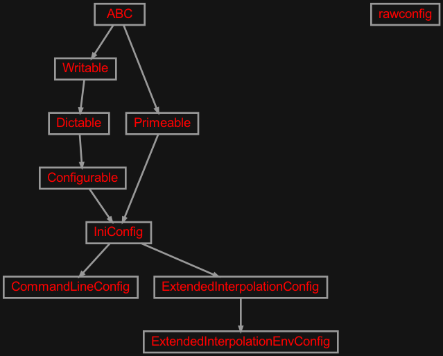
Implementation classes that are used as application configuration containers parsed from files.
- class zensols.config.iniconfig.CommandLineConfig(config_file=None, default_section=None, use_interpolation=False)[source]#
Bases:
IniConfigA configuration object that allows creation by using command line arguments as defaults when the configuration file is missing.
Sub classes must implement the
set_defaultsmethod. All defaults set in this method are then created in the default section of the configuration when created with the static methodfrom_args, which is called with the parsed command line arguments (usually from some instance or instance of subclassSimpleActionCli.
- class zensols.config.iniconfig.ExtendedInterpolationConfig(*args, **kwargs)[source]#
Bases:
IniConfigConfiguration class extends using advanced interpolation with
ExtendedInterpolation.- __init__(*args, **kwargs)[source]#
Create with a configuration file path.
- Parameters:
config_file – the configuration file path to read from; if the type is an instance of
io.TextIOBase, then read it as a file objectdefault_section – default section (defaults to default)
use_interpolation – if
True, interpolate variables usingExtendedInterpolationrobust – if True, then don’t raise an error when the configuration file is missing
- class zensols.config.iniconfig.ExtendedInterpolationEnvConfig(*args, remove_vars=None, env=None, env_sec='env', **kwargs)[source]#
Bases:
ExtendedInterpolationConfigAn
IniConfigimplementation that creates a section calledenvwith environment variables passed.- __init__(*args, remove_vars=None, env=None, env_sec='env', **kwargs)[source]#
Create with a configuration file path.
- Parameters:
config_file – the configuration file path to read from; if the type is an instance of
io.TextIOBase, then read it as a file objectdefault_section – default section (defaults to default)
use_interpolation – if
True, interpolate variables usingExtendedInterpolationrobust – if True, then don’t raise an error when the configuration file is missing
- class zensols.config.iniconfig.IniConfig(config_file=None, default_section=None, use_interpolation=False)[source]#
Bases:
Configurable,PrimeableApplication configuration utility. This reads from a configuration and returns sets or subsets of options.
- __init__(config_file=None, default_section=None, use_interpolation=False)[source]#
Create with a configuration file path.
- Parameters:
config_file (
Union[Path,TextIOBase]) – the configuration file path to read from; if the type is an instance ofio.TextIOBase, then read it as a file objectdefault_section (
str) – default section (defaults to default)use_interpolation (
bool) – ifTrue, interpolate variables usingExtendedInterpolationrobust – if True, then don’t raise an error when the configuration file is missing
- derive_from_resource(path, copy_sections=())[source]#
Derive a new configuration from the resource file name
path.- Parameters:
path (
str) – a resource file (i.e.resources/app.conf)copy_sections – a list of sections to copy from this to the derived configuration
- Return type:
- get_options(section=None)[source]#
Get all options for a section. If
opt_keysis given return only options with those keys.
- get_raw_str()[source]#
“Return the contents of the configuration parser with no interpolated values.
- Return type:
- property parser: ConfigParser#
Load the configuration file.
zensols.config.jsonconfig#
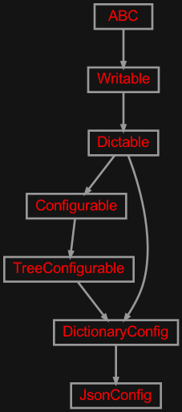
Implementation of the JSON configurable.
- class zensols.config.jsonconfig.JsonConfig(config_file, default_section=None, deep=False)[source]#
Bases:
DictionaryConfigA configurator that reads JSON as a two level dictionary. The top level keys are the section and the values are a single depth dictionary with string keys and values.
A caveat is if all the values are terminal, in which case the top level singleton section is
default_sectiongiven in the initializer and the section content is the single dictionary.- __init__(config_file, default_section=None, deep=False)[source]#
Initialize.
- Parameters:
config_file (
Union[Path,TextIOBase]) – the configuration file path to read from; if the type is an instance ofio.TextIOBase, then read it as a file objectconfig – configures this instance (see class docs)
default_section (
str) – used as the default section when non given on the get methds such asget_option()
zensols.config.keychain#
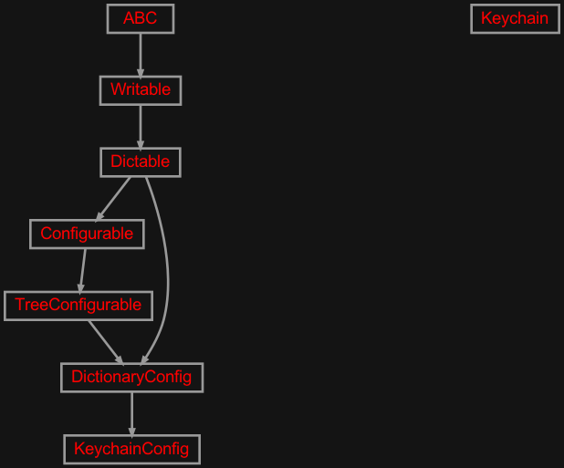
Get passwords from the macOS Keychain.app, and optionally add as a configuraiton.
- class zensols.config.keychain.Keychain(account, service='python-passwords')[source]#
Bases:
objectA wrapper to macOS’s Keychain service using binary
/usr/bin/security. This provides a cleartext password for the given service and account.- __init__(account, service='python-passwords')#
- static getpassword(account, service)[source]#
Get the password for the account and service (see class docs).
- Return type:
- property password#
Get the password for the account and service provided as member variables (see class docs).
- class zensols.config.keychain.KeychainConfig(account, user=None, service='python-passwords', default_section='keychain')[source]#
Bases:
DictionaryConfigA configuration that adds a user and password based on a macOS Keychain.app entry. The account (user name) and service (a grouping in Keychain.app) is provided and the password is fetched.
Example:
[import] sections = list: keychain_imp [keychain_imp] type = keychain account = my-user-name default_section = login
- __init__(account, user=None, service='python-passwords', default_section='keychain')[source]#
Initialize.
- Parameters:
account (
str) – the account (usually an email address) used to fetch in Keychain.appuser (
str) – the name of the user to use in the generated entry, which defaults toacountservice (
str) – the service (grouping in Keychain.app)default_section (
str) – used as the default section when non given on the get methds such asget_option()
zensols.config.meta#
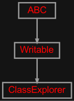
This file contains utility classes for exploring complex instance graphs.
This is handy for deeply nested Stash instances.
- class zensols.config.meta.ClassExplorer(include_classes, exclude_classes=None, indent=4, attr_truncate_len=80, include_dicts=False, include_private=False, dictify_dataclasses=False)[source]#
Bases:
WritableA utility class that recursively reports class metadata in an object graph.
- ATTR_META_NAME = 'ATTR_EXP_META'#
The attribute name set on classes to find to report their fields. When the value of this is set as a class attribute, each of that object instances’ members are pretty printed. The value is a tuple of string attribute names.
- __init__(include_classes, exclude_classes=None, indent=4, attr_truncate_len=80, include_dicts=False, include_private=False, dictify_dataclasses=False)[source]#
- write(inst, depth=0, writer=<_io.TextIOWrapper name='<stdout>' mode='w' encoding='utf-8'>)[source]#
Write the contents of this instance to
writerusing indentiondepth.- Parameters:
depth (
int) – the starting indentation depthwriter (
TextIOBase) – the writer to dump the content of this writable
zensols.config.serial#
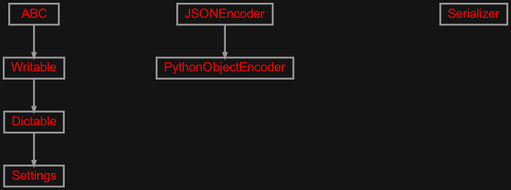
Simple string based serialization.
- class zensols.config.serial.PythonObjectEncoder(*, skipkeys=False, ensure_ascii=True, check_circular=True, allow_nan=True, sort_keys=False, indent=None, separators=None, default=None)[source]#
Bases:
JSONEncoder- default(obj)[source]#
Implement this method in a subclass such that it returns a serializable object for
o, or calls the base implementation (to raise aTypeError).For example, to support arbitrary iterators, you could implement default like this:
def default(self, o): try: iterable = iter(o) except TypeError: pass else: return list(iterable) # Let the base class default method raise the TypeError return JSONEncoder.default(self, o)
- class zensols.config.serial.Serializer(allow_types=<factory>, allow_classes=<factory>)[source]#
Bases:
objectThis class is used to parse values in to Python literals and object instances in configuration files.
- BOOL_REGEXP = re.compile('^True|False')#
- CLASS_REGEXP = re.compile('^class:\\s*(.+)$')#
- DEFAULT_RESOURCE_MODULE = None#
- EVAL_REGEXP = re.compile('^(?:eval|dict)(?:\\((.+)\\))?:\\s*(.+)$', re.DOTALL)#
- FLOAT_REGEXP = re.compile('^[-+]?\\d*\\.\\d+$')#
- INT_REGEXP = re.compile('^[-+]?[0-9]+$')#
- JSON_REGEXP = re.compile('^json:\\s*(.+)$', re.DOTALL)#
- LIST_REGEXP = re.compile('^(list|set|tuple)(?:\\((.+)\\))?:\\s*(.+)$', re.DOTALL)#
- PATH_REGEXP = re.compile('^path:\\s*(.+)$')#
- PRIMITIVES = {<class 'NoneType'>, <class 'bool'>, <class 'float'>, <class 'int'>}#
- RESOURCE_REGEXP = re.compile('^resource(?:\\((.+)\\))?:\\s*(.+)$', re.DOTALL)#
- SCI_REGEXP = re.compile('^([+-]?(?:0|[1-9]\\d*)(?:\\.\\d*)?(?:[eE][+\\-]?\\d+))$')#
- STRING_REGEXP = re.compile('^str:\\s*(.+)$', re.DOTALL)#
- __init__(allow_types=<factory>, allow_classes=<factory>)#
- format_option(obj)[source]#
Format a Python object in to the string represetation per object syntax rules.
- See:
- Return type:
- parse_list(v)[source]#
Parse a comma separated list in to a string list.
Any whitespace is trimmed around the commas.
- parse_object(v)[source]#
Parse as a string in to a Python object. The following is done to parse the string in order: :rtype:
AnyPrimitive (i.e.
1.23is a float,Trueis a boolean).A
pathlib.Pathobject when prefixed withpath:.Evaluate using the Python parser when prefixed
eval:.Evaluate as JSON when prefixed with
json:.
- populate_state(state, obj=None, parse_types=True)[source]#
Populate an object with a string dictionary. The keys are used for the output, and the values are parsed in to Python objects using
parse_object(). The keys in the input are used as the same keys ifobjis adict. Otherwise, set data as attributes on the object withsetattr().
- resource_filename(resource_name, module_name=None)[source]#
Return a resource based on a file name. This uses the
pkg_resourcespackage first to find the resources. If the resource module does not exist, it defaults to the relateve file given inmodule_name. If it finds it, it returns a path on the file system.Note that when a package is not installed, the
resourcesdirectory must be in the module system path. This happens automatically when installed, otherwise symbolic links are needed.- Param:
resource_name the file name of the resource to obtain (or name if obtained from an installed module)
- Parameters:
module_name (
str) – the name of the module to obtain the data, which defaults toDEFAULT_RESOURCE_MODULE, which is set byzensols.cli.simple.SimpleActionCli- Return type:
- Returns:
a path on the file system or resource of the installed module
- class zensols.config.serial.Settings(**kwargs)[source]#
Bases:
DictableA default object used to populate in
Configurable.populate()andConfigFactory.instance().
zensols.config.strconfig#
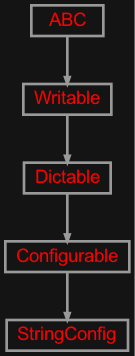
Implementation classes that are used as application configuration containers parsed from files.
- class zensols.config.strconfig.StringConfig(config_str, option_sep=',', default_section=None)[source]#
Bases:
ConfigurableA simple string based configuration. This takes a single comma delimited key/value pair string in the format:
<section>.<name>=<value>[,<section>.<name>=<value>,...]A dot (
.) is used to separate the section from the option instead of a colon (:), as used in more sophisticaed interpolation in theconfigparser.ExtendedInterpolation. The dot is used for this reason to make other section interpolation easier.- KEY_VAL_REGEX = re.compile('^(?:([^.]+?)\\.)?([^=]+?)=(.+)$')#
- __init__(config_str, option_sep=',', default_section=None)[source]#
Initialize with a string given as described in the class docs.
zensols.config.treeimpmod#
A factory class module to create deep nested dictionaries.
zensols.config.writable#
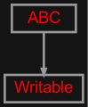
A class that allows human readable information (sometimes debugging) output with a hierarchical structure.
- class zensols.config.writable.Writable[source]#
Bases:
ABCAn interface for classes that have multi-line debuging capability.
- _set_indent(indent=None)[source]#
Set the indentation for the instance. By default, this value is 4.
- Parameters:
indent (
int) – the value to set as the indent for this instance, orNoneto unset it
- _write_line(line, depth, writer, max_len=False, repl_newlines=False)[source]#
Write a line of text
linewith the correct indentation perdepthtowriter.- Parameters:
max_line – truncate to the given length if an
intorWRITABLE_MAX_COLifTrue- Repl_newlines:
whether to replace newlines with spaces
- _write_block(lines, depth, writer, limit=None)[source]#
Write a block of text with indentation.
- Parameters:
limit (
int) – the max number of lines in the block to write
- _write_wrap(text, depth, writer, width=None, **kwargs)[source]#
Like
_write_line()but wrap text perwidth.- Parameters:
text (
str) – the text to word wrapdepth (
int) – the starting indentation depthwriter (
TextIOBase) – the writer to dump the content of this writablewidth (
int) – the width of the text before wrapping, which defaults toWRITABLE_MAX_COLkwargs – the keyword arguments given to
textwarp.wrap()
- _write_iterable(data, depth, writer, include_index=None)[source]#
Write list
datawith the correct indentation perdepthtowriter.- Parameters:
include_index (
bool) – ifTrue, add an incrementing index for each element in the output
- _write_dict(data, depth, writer, inline=False, one_line=False)[source]#
Write dictionary
datawith the correct indentation perdepthtowriter.
-
WRITABLE_INCLUDE_INDEX:
ClassVar[bool] = False# Whether to include index numbers with levels in sequences.
- abstract write(depth=0, writer=<_io.TextIOWrapper name='<stdout>' mode='w' encoding='utf-8'>)[source]#
Write the contents of this instance to
writerusing indentiondepth.- Parameters:
depth (
int) – the starting indentation depthwriter (
TextIOBase) – the writer to dump the content of this writable
zensols.config.writeback#
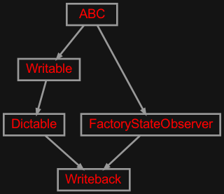
Observer pattern that write updates back to the configuration.
- class zensols.config.writeback.Writeback(name, config_factory)[source]#
Bases:
FactoryStateObserver,DictableSubclass for classes that want to write attribute changes back to a
Configurable. This uses an observer pattern that write updates back to the configuration.When an attribute is set on an instance of this class, it is first set using the normal Python attribute setting. After that, based on a set of criteria, the attribute and value are set on the backing configuration
config. The value is clobbered with a string version based on theconfig’sSerializerinstance (either a primitive value string or JSON string).Implementation Note: During initialization, the
__setattr__()is called by the Python interpreter, and before the instance is completely being populated.Important: The
_is_settable()implementation checks for a state (any such asCREATED) to be set on the instance. To change this behavior, you will need to overide this method.-
DEFAULT_SKIP_ATTRIBUTES:
ClassVar[Set[str]] = {'config', 'config_factory', 'name'}# Default set of attributes to skip when writing back to the configuration on attribute sets.
- __init__(name, config_factory)#
-
config_factory:
ConfigFactory# The configuration factory that created this instance and used for serialization functions.
-
DEFAULT_SKIP_ATTRIBUTES:
zensols.config.yaml#
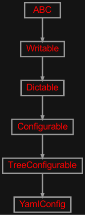
Application configuration classes parsed from YAML files.
- class zensols.config.yaml.YamlConfig(config_file=None, default_section=None, default_vars=None, delimiter='$', sections_name='sections', sections=None)[source]#
Bases:
TreeConfigurableJust like
IniConfigbut parse configuration from YAML files. Variable substitution works just like ini files, but you can set what delimiter to use and keys are the paths of the data in the hierarchy separated by dots.See the test cases for examples.
- CLASS_VER = 0#
- __init__(config_file=None, default_section=None, default_vars=None, delimiter='$', sections_name='sections', sections=None)[source]#
Initialize this instance. When sections are not set, and the sections are not given in configuration file at location
sections_namethe root is made a singleton section.- Parameters:
config_file (
Union[str,Path,TextIOBase]) – the configuration file path to read from; if the type is an instance ofio.TextIOBase, then read it as a file objectdefault_vars (
Dict[str,Any]) – used in place of missing variables duing value interpolation; deprecated: this will go away in a future releasedefault_section (
str) – used as the default section when non given on the get methds such asget_option(); which defaults todefualtdelimiter (
str) – the delimiter used for template replacement with dot syntax, orNonefor no template replacementsections_name (
str) – the dot notated path to the variable that has a list of sectionssections (
Set[str]) – used as the set of sections for this instance
Module contents#
Contains modules that provide configuration utility.